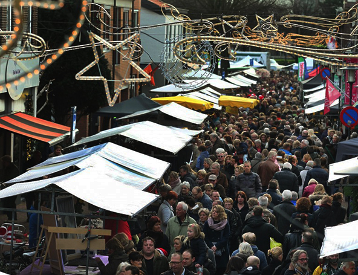
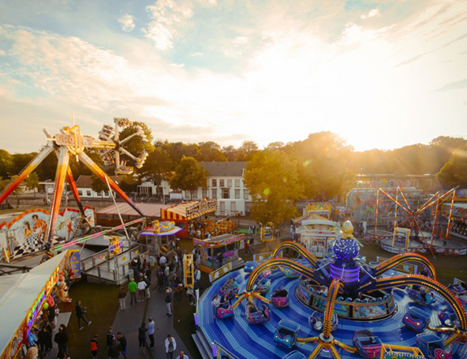

Activiteiten
In de omgeving van Santpoort-Noord zijn een hoop leuke activiteiten waar u aan mee kunt doen of kunt bezoeken. Hieronder vindt u een lijstje van een aantal van de activiteitenen in de omgeving van Santpoort-Noord.
Vrijdag markt
Elke vrijdag is er weekmarkt op de Hagelingerweg. Hier kunt u terecht voor allerlei dingen. Hier staan verschillende kramen bijvoorbeeld voor een lekker stukje vis, een bakker, kruidenier enzovoorts.
Feestweek - Dorpsfeest Santpoort-Noord
Elke tweede week in de Zomervakantie is het weer een week lang feest in Santpoort-Noord, welke elk jaar wordt georganiseerd door de harddraverij vereniging Santpoort en omstreken. Er zijn deze week allerlei soorten activiteiten te doen. U kunt hierbij denken aan een ringsteek wedstrijd, een steppenrace, footgolf, kwallenballen, wielrenwedstrijden, kortebaandraverij en nog veel meer. Daarnaast is er ook elk jaar een leuke kermis waarop allerlei soorten attracties te vinden zijn.